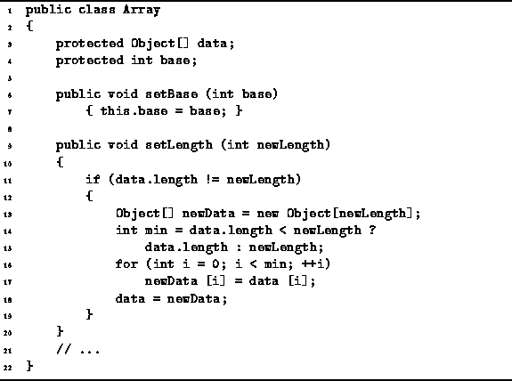
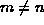
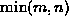
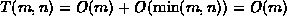

Data Structures and Algorithms
with Object-Oriented Design Patterns in Java
Data Structures and Algorithms
with Object-Oriented Design Patterns in Java
The setBase and setLength methods
of the Array class are given in Program  .
The setBase method simply modifies the base field as required.
The setLength method provides a means
to change the size of an array at run time.
This method can be used both to increase and to decrease
the size of an array.
.
The setBase method simply modifies the base field as required.
The setLength method provides a means
to change the size of an array at run time.
This method can be used both to increase and to decrease
the size of an array.

Program: Array class setBase and setLength methods.
The running time of this algorithm depends only on the new array length. Let n be the original size of the array and let m be the new size of the array. Consider the case where . The Resize method first allocates and initializes a new array of size m. Next, it copies at most  elements from the old array to the new array. Therefore, .
 Copyright © 1998 by Bruno R. Preiss, P.Eng. All rights reserved.
Copyright © 1998 by Bruno R. Preiss, P.Eng. All rights reserved.